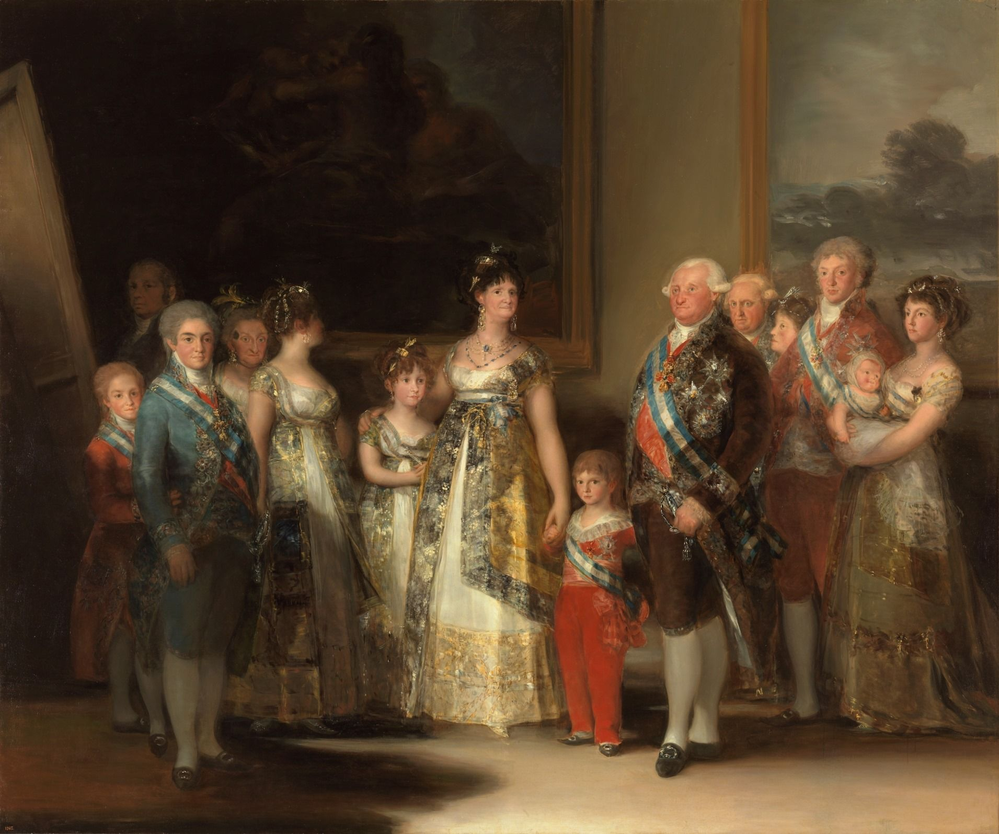
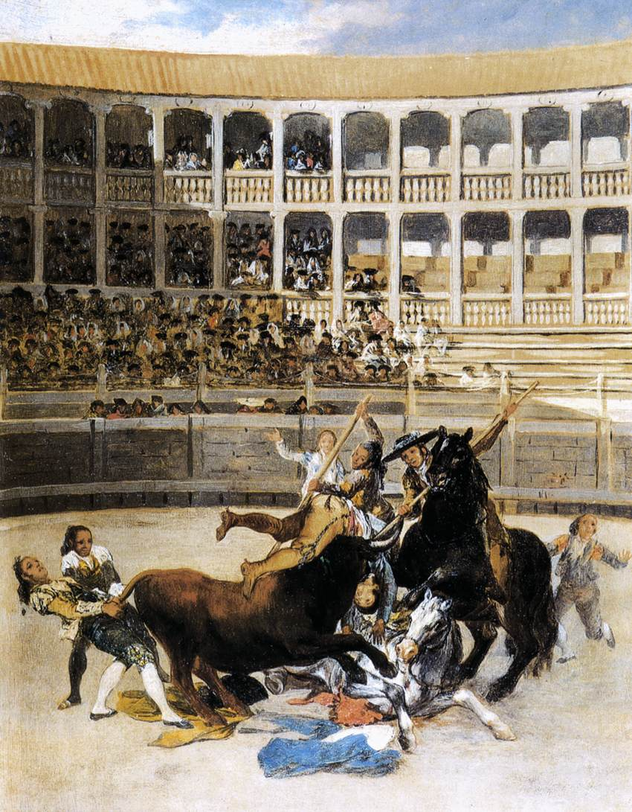
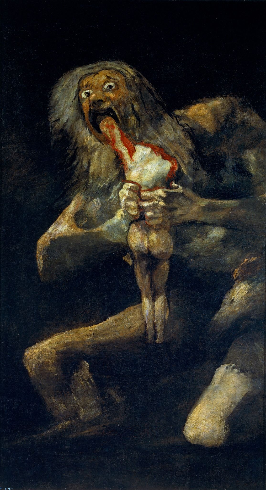
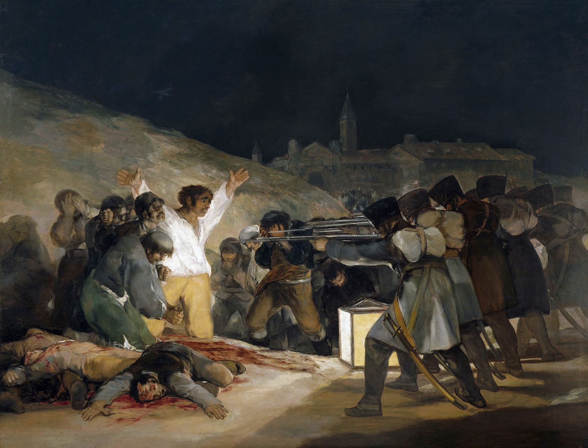

“ 3. Francisco Goya ”
Francisco Goya (ฟรันซิสโก โกยา) : ศิลปินผู้ได้ขึ้นชื่อว่าเป็นผู้นำเสนอภาพ "ฝันร้าย"
ประวัติโดยย่อของ : ฟรานซิสโก โกยา (Francisco Goya) หรือชื่อเต็ม ฟรานซิสโก โคเซ เด โกยา อี ลูเซียนเตส (Francisco José de Goya y Lucientes) เกิดเมื่อวันที่ 30 มีนาคม พ.ศ. 2289 (ค.ศ. 1746) ณ หมู่บ้านฟูนเดโตดอส (Fuendetodos) แคว้นอารากอง ประเทศสเปน เสียชีวิตเมื่อวันที่ 16 เมษายน พ.ศ. 2371 (ค.ศ. 1828) ณ เมืองบอร์โด ประเทศฝรั่งเศส
โกยาเสียชีวิตที่เมืองบอร์โด ประเทศฝรั่งเศส ในวันที่ 16 เมษายน ค.ศ. 1828 ช่วงปลายชีวิตของโกยาประสบกับความเจ็บป่วยและความสูญเสีย ผลงานในช่วงนี้มักสะท้อนถึงความมืดมน ความโหดร้าย และด้านมืดของจิตใจมนุษย์
ผลงานต่างๆของ Francisco Goya...
Charles IV of Spain and His Family, 1800–01
Picador Caught by the Bull, 1793
Saturn Devouring One of His Sons, 1819–1823
ผลงานที่ชื่นชอบเป็นการส่วนตัว...
The Third of May 1808, 1814
"เป็นภาพสงครามของประเทศสเปนที่ถูกนำมาวาดได้สะท้อนถึงความโหดร้ายที่เกิดขึ้น"
อ้างอิง Mark Rothko : https://en.wikipedia.org/wiki/Mark_Rothko
อ้างอิง Johannes Vermeer : https://en.wikipedia.org/wiki/Johannes_Vermeer
อ้างอิง Francisco Goya : https://en.wikipedia.org/wiki/Francisco_Goya
ก่อนหน้า